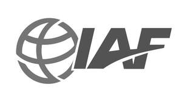

Trade Mark Journal No.2025/020 16 May 2025
UK00004197039 30 April 2025 (7,12)

- Class 7
- Industrial robots; 3D printers; Bulldozers; Backhoes; Conveying machines; Elevators; Escalators; Robotic mechanisms for lifting; Robotic mechanisms used in agriculture; Electric motors for machines; Electric motors [other than for land vehicles]; Pneumatic controls for motors; Roller bearings; Ball bearings for motors; Ball bearings for machines; Tire mounting machines; Tyre trimming machines; Generators; Electricity generators; Solar power generators; Painting machines; Automatic robotic spray guns for paint; Gas welding machines; Electric welding machines; Printing machines; Packaging machines; Sealing machines; Labelling machines; Textile milling machines; Sewing machines for textiles and leather; Fuel dispensing pumps; Distribution pumps; Electric kitchen appliances for chopping, mixing, pressing; Machines for slicing food [electric, kitchen]; Automatic vending machines; Electrolysis apparatus for electroplating; Galvanizing machines; Opening and closing mechanisms; Automatic door apparatus [electric]; Cylinders for motors and engines; Cylinder head gaskets.
- Class 12
- Motor land vehicles; Disc brake pads for vehicles; Bodyworks for motor vehicles; Frames for bicycles; Saddles for bicycles; Vehicle bodies; Tractor trailers; Vehicle seats; Seat cushions for the seats of cars; Direction indicators for bicycles; Windshield wipers [vehicle parts]; Tyres for vehicle wheels; Valves for vehicle tires; Vehicle windows; Vehicle rear windows; Snow chains for vehicle wheels; Snow chains for motor vehicles; Roof racks for vehicles; Bicycle carriers; Air pumps for bicycles for the inflation of tyres; Pumps for inflating pneumatic tyres; Anti-theft alarms for vehicles; Reverse motion alarms for vehicles; Passenger seat belts; Airbags for vehicles; Baby carriages; Electric wheelchairs; Hand carts; Shopping trolleys; Railway vehicles; Locomotives; Marine vehicles; Fitted covers for boats and marine vehicles; Fuselages [aircraft parts]; Structural parts for aircraft.
INTERNATIONAL AUTOMOTIVE FEDERATION INC.
Representative: Way Insight IP Services LTD